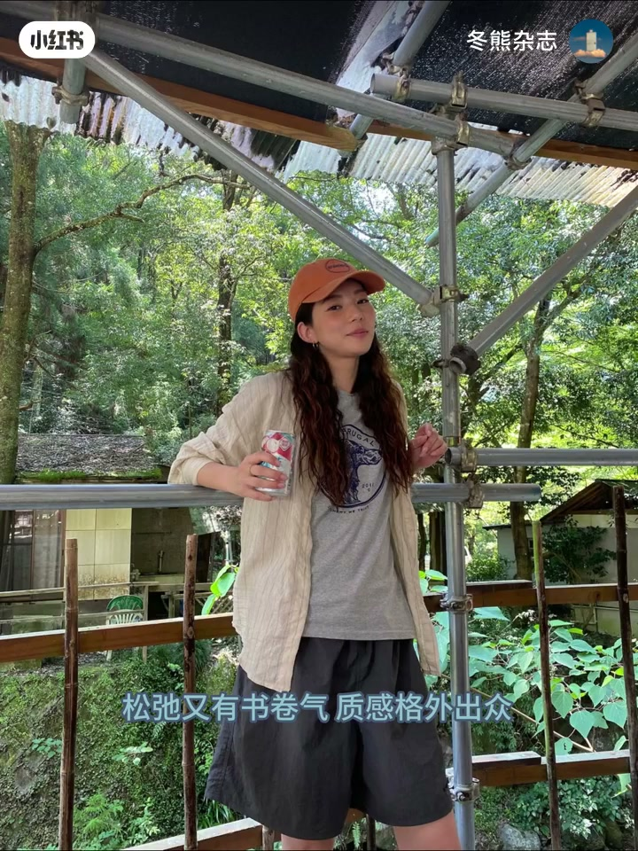
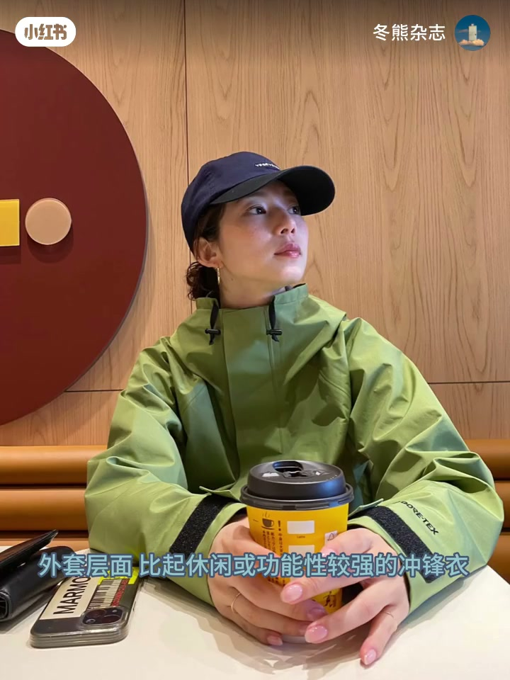
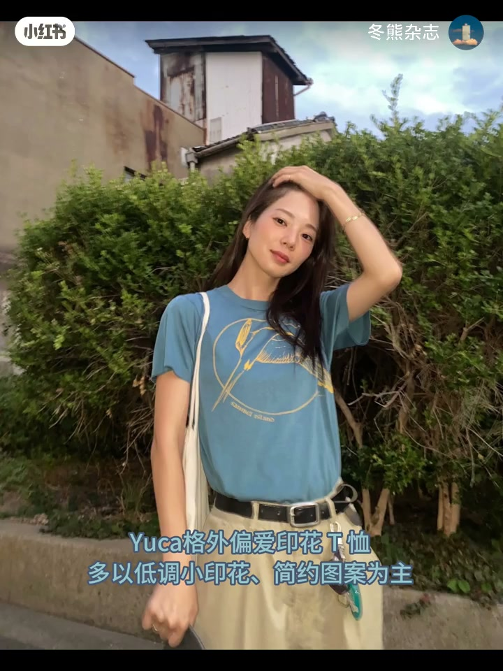
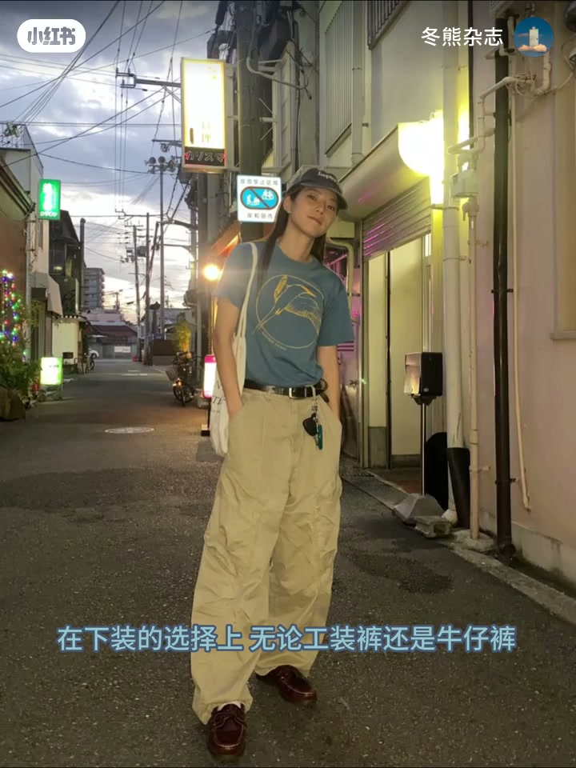
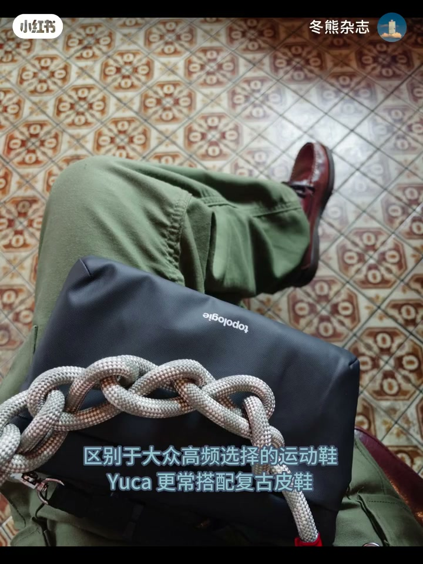
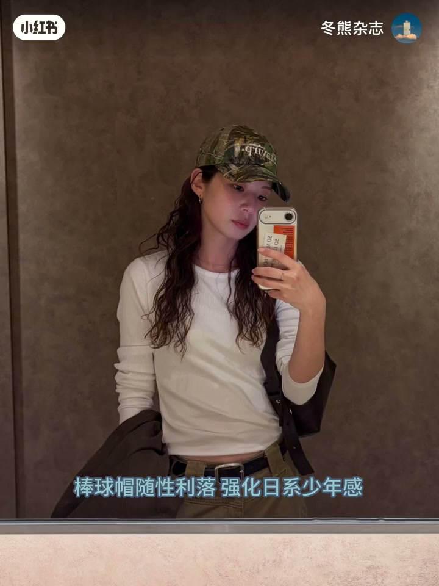
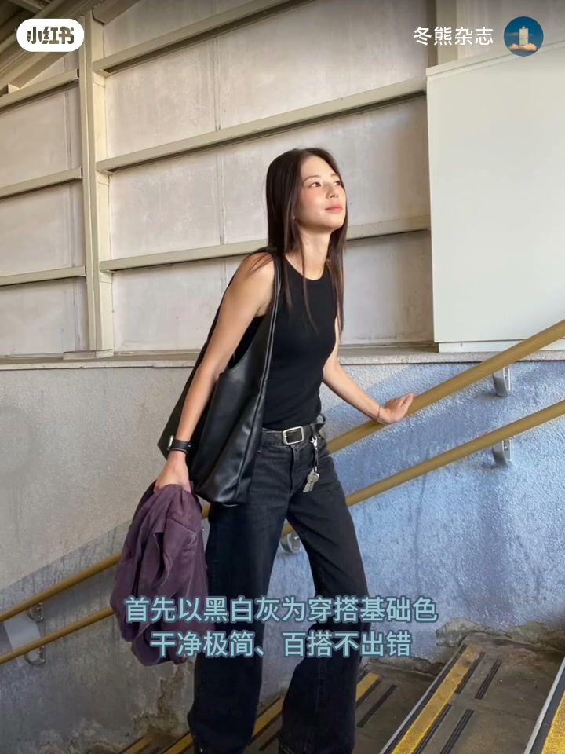

内容要点
固有印象里，日系少年感常被贴上休闲随性、宽松与运动慵懒的标签。冬熊杂志拆解日本博主 Yuca：她在干净清爽的简约基调上，叠上清冷克制的高质姐系氛围，松弛又有书卷气。本期从单品挑选与配色逻辑两条线，说明她如何弱化过度休闲感，把少年感穿成高级耐看。
知识结构
日系少年感不等于只会宽松运动风；Yuca 在简约干净之上叠加清冷高质，松弛带书卷气。
外套偏爱挺阔工装夹克而非厚重冲锋衣；内搭主打低调印花 T 与纯色/格纹/条纹衬衫，单穿叠穿都好用。
工装裤与牛仔裤取直筒挺阔，不拖地不过度宽松；鞋少用大众运动鞋，多用复古皮鞋或皮面德训鞋抬精致度。
八成以上造型用帽子：棒球帽强化少年感，贝雷帽中和硬朗，毛线帽柔和；细框眼镜作常驻配饰。
低饱和纯色为主：黑白灰打底、大地色（卡其军绿）复古、藏青米色点睛书卷气；核心是单品取舍+配色克制。
把日系少年感做「高质」，关键不是堆更多休闲单品，而是用挺阔工装、直筒下装、皮面鞋与帽子眼镜细节弱化松垮；配色守住低饱和，黑白灰与大地色当底盘，再点一笔藏青米色。
00:00-00:29打破刻板：少年感也可以清冷有质感
开场先拆固有印象：日系少年感大多离不开休闲随性、宽松版型与运动慵懒。日本博主 Yuca 却打破刻板——在干净清爽的简约基调上，融合清冷克制的高质姐系氛围，「松弛又有书卷气，质感格外出众」。
冬熊自我介绍后立题：从单品挑选与配色逻辑两大角度拆解，看她如何重塑日系少年感，轻松穿出高级耐看。

00:29-01:09上装：工装夹克 + 印花 T / 衬衫
外套层面，比起休闲或功能性很强的冲锋衣，她更偏爱版型利落的工装夹克：挺阔剪裁、简约不笨重，自带清冷中性气场，休闲、通勤、户外都适用。
内搭通常基础简洁：格外偏爱印花 T，多以低调小印花、简约图案为主，有趣不浮夸；衬衫则纯色、格纹、条纹都有，既能单穿也能叠穿增加层次，是春夏百搭核心。


01:09-01:40下装直筒挺阔，鞋用皮面抬精致
下装无论工装裤还是牛仔裤，都以挺阔利落的直筒为主：线条干净流畅，不拖地也不过度宽松，兼顾少年感与通勤得体。
鞋子是高质感关键：区别于大众高频运动鞋，她更常搭复古皮鞋；近年热门的德训鞋也优先皮面款，弱化整体休闲感，悄悄抬精致度与成熟知性。


01:40-02:01帽子与细框眼镜：氛围感常驻件
帽子几乎是标配：八成以上造型会用帽子点缀。棒球帽随性利落强化日系少年感；贝雷帽温柔文艺，中和中性硬朗；毛线帽柔和，适配多种风格。
文艺感细框眼镜也是常驻配饰，用小巧细节让整套质感翻倍。

02:01-02:55配色三层：黑白灰、大地色、质感点睛
配色规律清晰：整体低饱和纯色，靠固定色系组合抬质感。先以黑白灰为打底，干净极简百搭；再高频用大地色系，卡其军绿为主调，复古又温柔有力；最后用藏青、米色这类内敛柔和的色调点睛，低调耐看、书卷气与知性并存。
综合判断：高质少年感的核心，是通过单品取舍与配色克制，避免或弱化过度休闲感，叠上简约干净利落的知性氛围。公式简单实用；片尾预告下期主题仍在思考中。

完整转录（81段）
以下文本由 Whisper medium 模型自动转录，可能存在少量识别误差，已尽可能修正。
在我们的固有印象里
日系少年感穿搭大多离不开
休闲随性、宽松版型
与运动慵懒的风格标签
但日本宝藏穿搭博主Yuka
却打破了这种刻板印象
在干净清爽的严细基调之上
融合清冷克制的高质解析氛围
松弛又有书卷气
质感格外出众
大家好我是小熊
本期就从单品挑选与配色逻辑
两大核心角度
深度拆解Yuka的穿搭思路
聊聊她如何重塑日系少年感
轻松穿出高级耐看的质感穿搭
在单品的选择上
Yuka有着自己独特的穿搭巧思
彻底跳出了日系穿搭的固有框架
外套层面比起休闲或功能性较强的冲锋衣
她更偏爱版型俐落的工装夹克
挺阔剪裁、简约不笨重
自带清冷俐落的中性气场
属于休闲、通勤、户外都很适用的单品
内搭的选择通常基础又简洁
Yuka格外偏爱印花T恤
多以低调小印花、简约图案为主
有趣不浮夸、随性又耐看
自带松弛氛围
此外衬衫也是她的核心单品
纯色、格纹、条纹款式应有尽有
风格百搭不局限
这两个基础款既能不费力单穿
又能叠穿增加造型层次
绝对是春夏衣柜里不可或缺的百搭好物
在下装的选择上
无论工装裤还是牛仔裤
Yuka都以挺阔俐落的直筒版型为主
线条干净流畅
不脱它更不宽松过度
完美适配少年感的同时
兼顾日常通勤的得体
鞋子则是打造高质感的关键
具别于大众高频选择的运动鞋
Yuka更常搭配复古皮鞋
就连近年热门的德训鞋
她也优先选择皮面款式
这类鞋款可以弱化整体的休闲感
悄悄提升穿搭精致度与成熟知性气质
而帽子也是Yuka穿搭里不可或缺的氛围感利器
八成以上的造型都会用帽子来点缀
棒球帽随性俐落强化日系少年感
贝雷帽温柔文艺中和中性风的硬朗
毛线帽拥揽柔和适配多种穿搭风格
除此之外文艺感细框眼镜也是她的常驻配饰
用小巧的细节让整套穿搭质感翻倍
在配色逻辑上
Yuka的选色规律清晰且很有参考性
整体以低饱和纯色为主
靠固定色系组合提升穿搭质感
首先以黑白灰为穿搭基础色
干净极简百搭不出错
也是打造清爽日系感的基础
其次高频运用大地色系
卡其均绿为主调自带复古氛围感
温柔又有力量
最后巧用质感色系点睛
比如藏青米色这类内脸柔和的色调
低调耐看自带疏卷气与织性氛围
综合来看Yuka的高质少年感穿搭
核心就在于通过单品取舍与配色克制
来避免或弱化过度的休闲感
从而叠加简约干净俐落的织性氛围
这样的穿搭工式简单又实用
非常好借鉴
希望能够通过这篇笔记
帮助大家轻松get进阶版少年感穿搭
那本期就先到这里啦
下期的主题还在思考中
感兴趣的宝宝拜托持续关注
很快再见